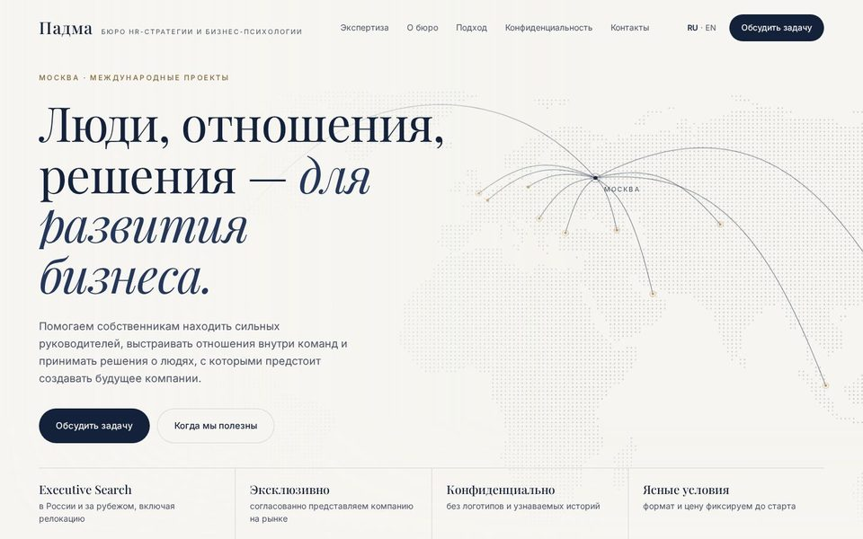
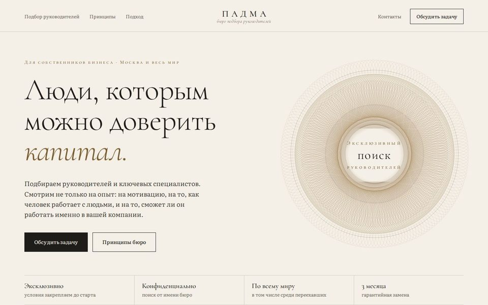
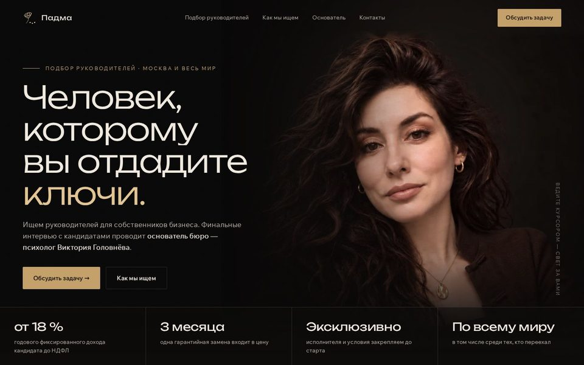
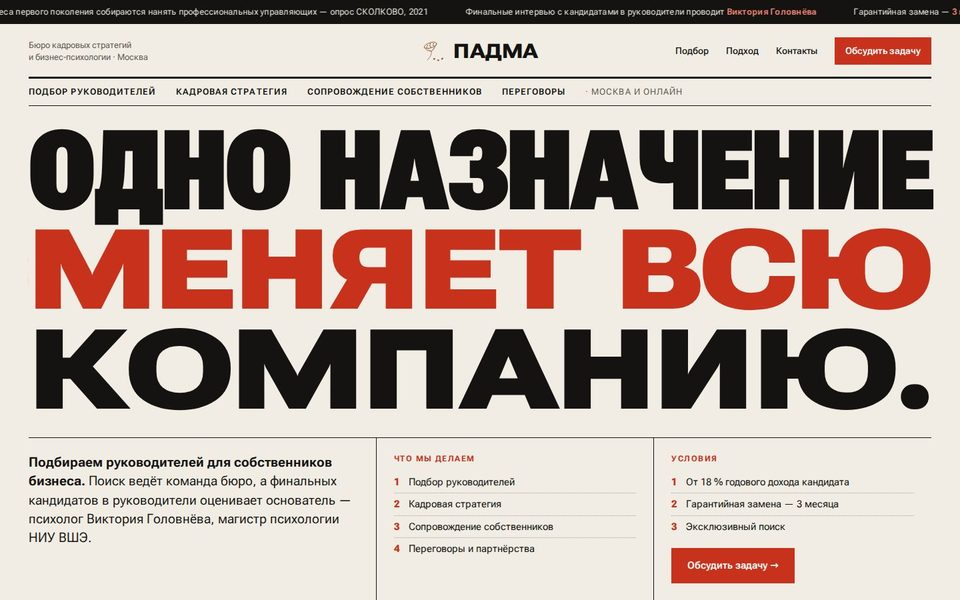
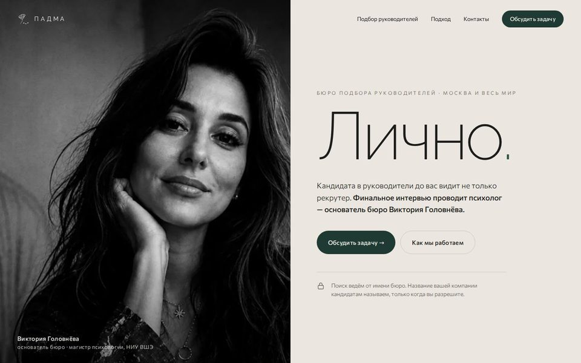

Для собственников крупного бизнеса. У каждого варианта свои шрифты, цвет и свой «крючок» на первом экране; второй экран показывает, как дизайн продолжается ниже. Тексты и цифры взяты с сайта бюро, ничего не придумано.

Фарфор, морской синий, шампань. Вместо фото — точечная карта мира: из Москвы прорисовываются дуги, как маршруты перелётов, — поиск в России и за рубежом. Тексты и смыслы — из присланного прототипа («Люди, отношения, решения», «Доверие не требует публичности»); его цвет, шрифты и картинка не использованы. Два экрана.

Светлый, «дорого» и спокойно: слоновая кость, чернила, бронза. Без фото и без опоры на одного человека — в центре бюро и его правила. Вместо фото — гильош, узор ценных бумаг, рисуется линией при открытии и медленно вращается. В заголовке сменяется слово: «доверить компанию / капитал / семейное дело / решения». Ниже — короткое эссе с буквицей, сноска СКОЛКОВО и четыре принципа.

Тёмный кабинет, латунь. Портрет Виктории в полутьме, свет идёт за курсором, на телефоне — за пальцем. Ниже шесть шагов поиска, линия заполняется при прокрутке.

Деловая газета: бумага, тушь, красный. Заголовок во всю ширину, буквы «раздвигаются» при открытии. Бегущая строка с фактами. Ниже — 47 % из опроса СКОЛКОВО со счётчиком и четыре направления.

Тихая роскошь частного офиса: камень, хвоя, ч/б портрет на пол-экрана. Портрет открывается шторой, одно слово крупно. Ниже цитата проявляется словами и три правила бюро.
Стенд дизайна, закрыт от поиска. Кнопки никуда не ведут. В вариантах 1–3 цитата Виктории ждёт её подтверждения (вопрос В1).